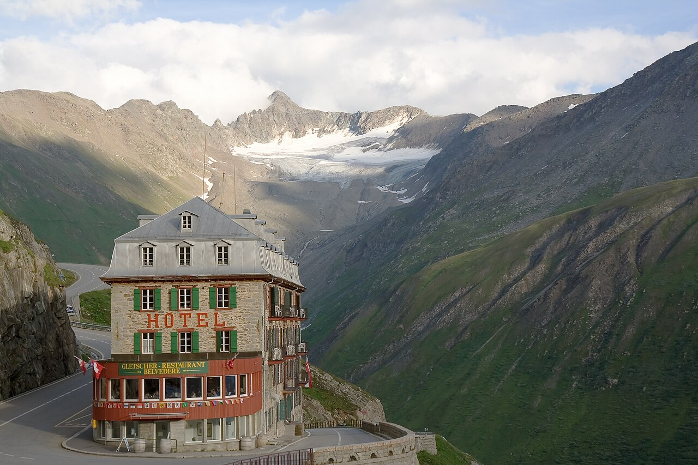
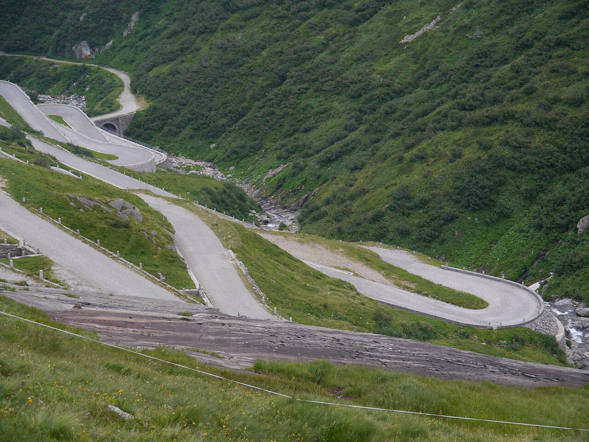
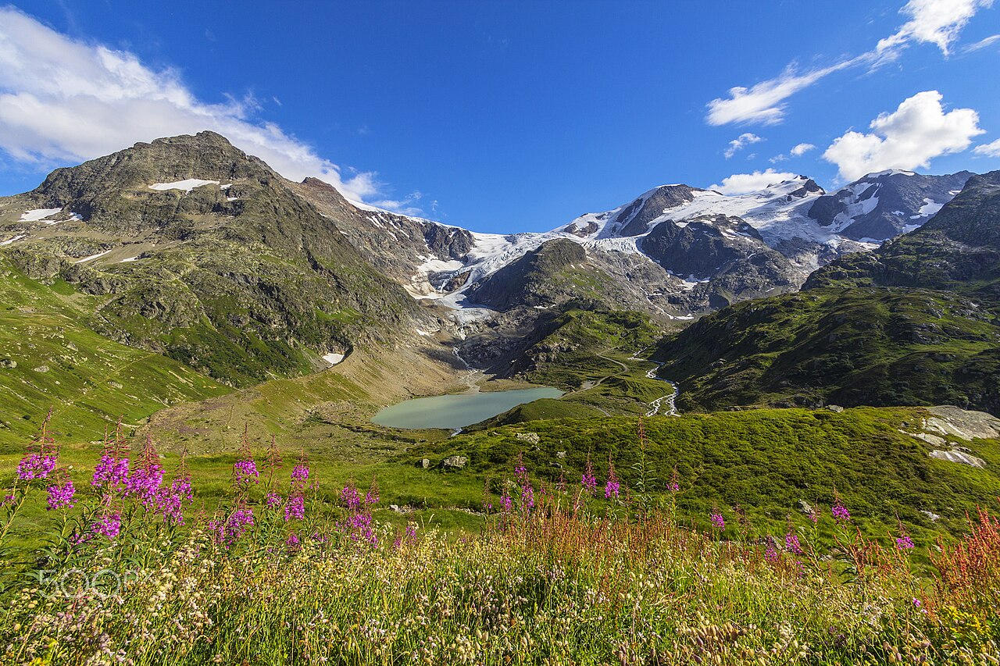
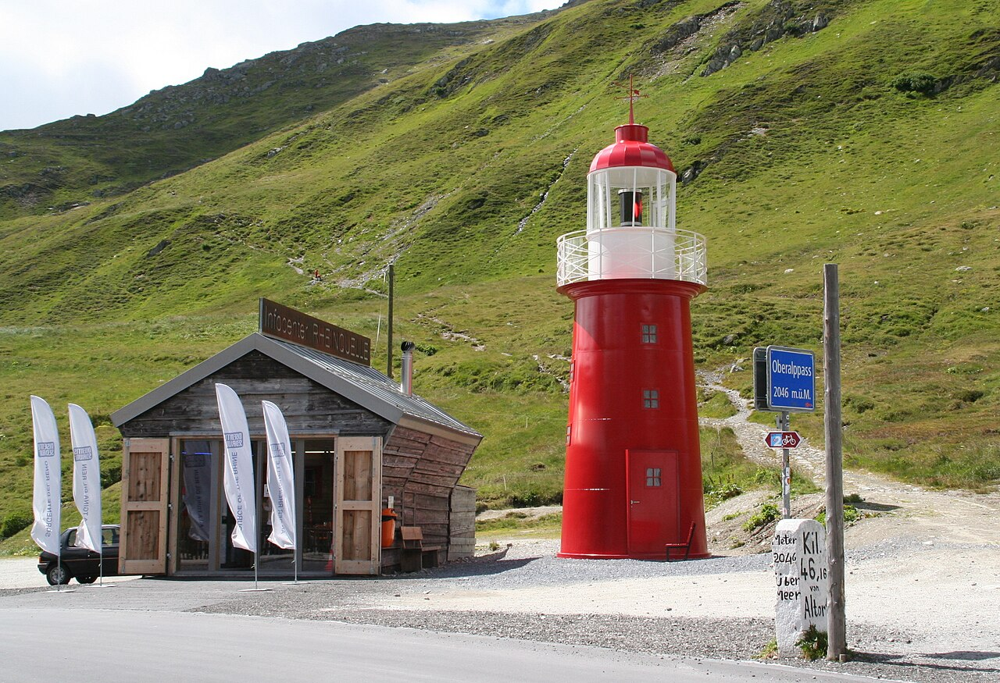
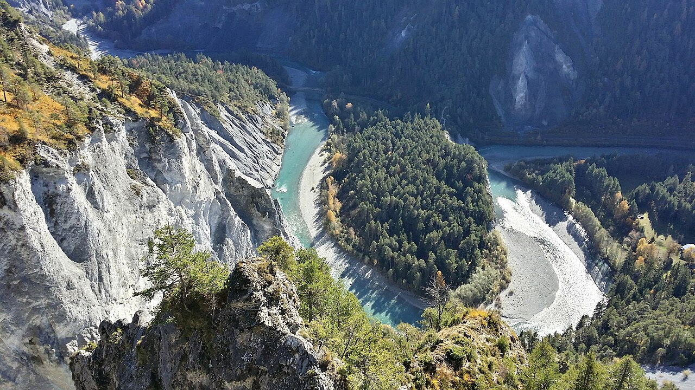

May
Not idealToo early: the high passes only open from late May to mid-June.
in Switzerland, per person≈ €1 540–2 860
All-in from €1 540 (Langenfeld) · €2 340 (Mexico City)

Hairpin passes, glaciers by the roadside, turquoise lakes and every hidden corner a train can't reach. The most freedom for five people sharing one car.
In 2026 the Furka, Grimsel and Nufenen passes opened on 29 May and Susten in mid-June. Go after mid-June. July adds snow-free high trails; August has the busiest pass roads.
July–August adds ≈ €160–330 per person in Switzerland (+10 %), mostly for beds, and the flights from Mexico City cost ≈ 30 % more. Passes, food and most lift tickets cost the same all summer.
Too early: the high passes only open from late May to mid-June.
Passes open between walls of snow, and the roads are quiet. High trails still opening.
Everything open: every pass, lift and trail. Book the beds early.
All open, but the busiest pass roads and full campsites.
Keep 1–2 days flexible and save the big mountain days for clear weather.
Drive ≈ 5.5 h to the Rhine Falls (break), then on to Brunnen on Lake Lucerne. Friends from Mexico City: fly into Zürich. You two pick them up at the airport on the drive down (≈ 45 min to Lake Lucerne).
Steepest funicular in the world and the Klingenstock → Fronalpstock ridge. Drive the Axenstrasse along the lake.
Over the Susten pass (glacier at the roadside) → Aare Gorge → Lake Brienz (Iseltwald) → Lauterbrunnen.
Leave the car and take the train/cable car to car-free Mürren. Trümmelbach Falls.
First & Bachalpsee, or the Männlichen Royal Walk.
Oeschinensee + Blausee, then the Lötschberg car train Kandersteg → Goppenstein (≈ CHF 30 per car) → Täsch.
Shuttle to Zermatt, then Gornergrat & Riffelsee or the Five Lakes Walk.
Rhône valley → Furka pass (Hotel Belvédère, Rhône Glacier ice grotto) → Andermatt → Oberalp lighthouse → Flims.
Swim in the turquoise lakes, then the Il Spir viewpoint over the Ruinaulta.
Over the San Bernardino pass → Bellinzona castles → Tenero on Lake Maggiore.
Verzasca riverside hike + Foroglio waterfall.
Drive the cobbled Tremola hairpins over the Gotthard → Andermatt → Lucerne area.
≈ 6–7 h drive home. Friends: drop them at Zürich airport on the last day (≈ 45 min from Lucerne).





With 5 people, a holiday apartment with a kitchen is almost always cheapest. Book with free cancellation now and re-check prices later.
Camping Jungfrau (Lauterbrunnen) and the Tenero lake campsites rent cabins and mobile homes for 5. Wild camping is generally not allowed.
≈ CHF 40–55 pp/nightEasy with a car: book places outside the villages with free parking.
≈ CHF 75–100 pp/nighte.g. a historic hospice on the Gotthard or Grimsel: the passes are magic after the traffic goes.
≈ CHF 120–200 ppYou two drive down and pick the friends up at Zürich airport. Your own car is tight for 5 adults + luggage (add a roof box), so consider a 7-seater (VW Touran/Sharan, V-Class) from Düsseldorf or Köln for ≈ €50–100/day, usually cheaper than renting in Switzerland. Check the rental allows Switzerland. Vignette CHF 40 only at via.admin.ch (resellers charge more).
Fly into Zürich. You two pick them up at the airport on the drive down (≈ 45 min to Lake Lucerne). Drop them at Zürich airport on the last day (≈ 45 min from Lucerne).
The car does most of the work. Budget ≈ CHF 200–350 per person for lifts and mountain trains (Mürren, First, Gornergrat, Oeschinensee). A Half Fare Card (CHF 150) roughly breaks even, so only buy it if you add Jungfraujoch or Schilthorn.
CHF per person in May–June, sharing everything in Switzerland between 5. Only the trip there differs: the train from Langenfeld or the flights from Mexico City. 'Budget' = hostels/campsites and cooking. 'Comfort' = apartments/3★ hotels and more meals out.
| Item | Budget | Comfort |
|---|---|---|
| Car hire 7-seater (÷5) · own car = 0 | 0 | 170 |
| Fuel, vignette, car train, parking (÷5) | 100 | 110 |
| Lifts, trains & entry fees | 200 | 350 |
| Accommodation (12 nights) | 600 | 1 080 |
| Food | 455 | 845 |
| Buffer | 80 | 120 |
| In Switzerland, everyone | 1 435 | 2 675 |
| Getting there and back | ||
| You two: driving (car costs are shared above) | 0 | 0 |
| Friends: flights Mexico City ⇄ ZRH | 750 | 1 100 |
| Total from Langenfeld | 1 435 | 2 675 |
| Total from Mexico City | 2 185 | 3 775 |
€ at 1 CHF ≈ €1.07. 2026 prices; Swiss fares rise ≈ 3–4 % from Dec 2026. Flights are an estimate for economy with one stop, booked 3–6 months ahead. Splurges are listed separately.
Today is late October 2026. See the overview page for the full timeline.